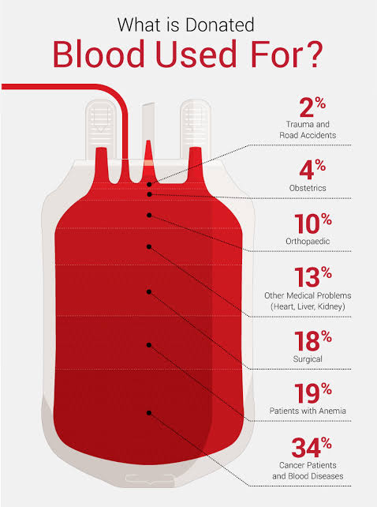

Why Should you Donate Blood?
- Reduced risk of heart attacks and liver ailment
- Donating blood regularly is beneficial to prevent and reduce heart attacks and liver ailment. The risk of heart and liver related problem is caused by the iron overload in the body. Donating blood helps in maintaining the iron level in the body and thus reduce those risk.
- Lowered risk of cancer
- By donating blood regularly,the iron level in the blood is balanced and the risk of cancer-related to the liver, lungs, and intestine gets lower.
- New blood cells
- Once we donate blood, the body tries to restore the blood loss. This helps in the production of the new blood cells and maintain good health.
- Maintain Weight
- It is recommended to donate blood for those who are overweight. Regularly donating blood helps in weight loss and burn fat up to 650 calories.
- Helps prevent premature ageing
- Blood donation helps in reducing stress on your mind and body. Also, keeps the skin tight and wrinkle-free.
- Speeds up healing process
- The body tries to adjust to the loss of red blood the cells we donate blood, these adjustments also help in accelerating the wound healing process.
- Lower cholesterol level
- Blood donation can help to reduce the amount of iron in the blood thus helps in lower cholesterol.
- Blood storage
- There is no other method to manufacture blood; the only way to collect blood is from the people who are willing to donate. The blood that we donate is also stored at the blood bank after their usage and used in future when needed. Some chemicals are added to it in order to preserve it for long time and use it in future when needed.
- Save lives
- Every time we donate one pint of blood it helps save three lives, so if we donate four times in a year we end up saving 12 lives. We don’t have to be a superhero to save someone, a simple act of donating blood can also save lives.